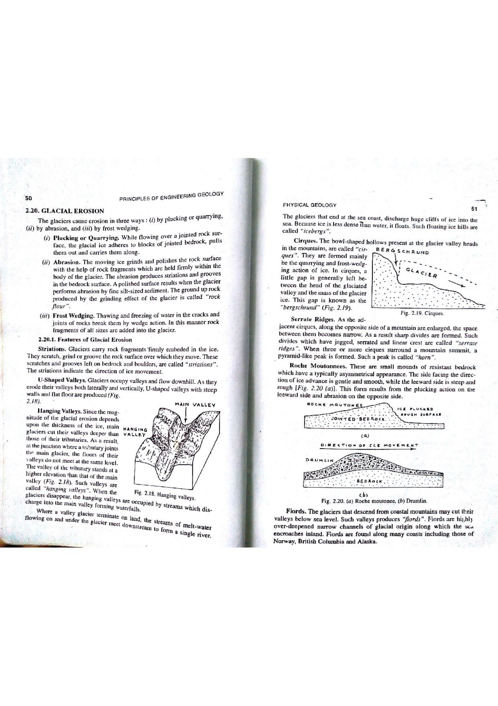

A fiord (or fjord, from Old Norse fjörðr) is a long, narrow, steep-sided, deep marine coastal inlet or drowned valley produced by the glacial carving of a U-shaped trough below sea level, followed by post-glacial marine inundation. Fiords represent the most dramatic coastal erosional landforms created by glacial activity.
The morphology and oceanographic hydrodynamics of a fiord are governed by several diagnostic characteristics:

| Coastal Inlet Type | Primary Originating Agent | Cross-Profile Geometry | Longitudinal Bed Profile | Seaward Mouth Sill |
|---|---|---|---|---|
| Fiord (Fjord) | Glacial activity (Drowned glacial trough) | U-shaped; steep to vertical cliffs ($>500 - 1000\text{ m}$) | Overdeepened rock basin (hundreds of meters below sea level) | Present (Shallow bedrock sill or moraine ridge) |
| Ria | Fluvial activity (Drowned river valley) | V-shaped; sloping, dendritic valley sides | Deepens gradually and continuously seaward | Absent (No bedrock sill) |
| Estuary | Tidal & Fluvial mixing | Funnel-shaped; low relief alluvial banks | Shallow; sandbars and mudflats | Variable (Tidal sand shoals) |
| Fjard | Glacial erosion of low-relief crystalline plains | Lower relief, undulating, branched glacial inlet | Moderately shallow; many small rocky islets (skerry guard) | Present (Irregular shallow sills) |
Because the seaward threshold (sill) severely restricts deep-water exchange with the open ocean, the hydrodynamics of fiords lead to distinct environmental and sedimentological signatures: